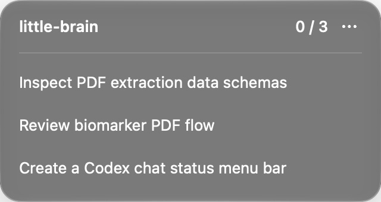

See which chats
are ready.
Littlebrain puts running Codex chats and unread replies in your Mac menu bar.
macOS 26 or later Apple silicon Codex desktop

Install littlebrain
- Open the downloaded DMG.
- Drag littlebrain into Applications.
- Open Codex and littlebrain.
To update, quit littlebrain and replace it in Applications with the latest download.